PCB 与功率布局：在电力电子里怎么用
寄生参数 · 环路面积 · Kelvin —— 从原理图到一块"开得快、振得小、过的了 EMC"的功率板
原理图决定"电流走哪里"，布局决定"电流以什么代价走那里"。同样一张 Buck 原理图，布局好的板子关断尖峰 30 V、EMC 一次过；布局差的板子尖峰 120 V、加 Snubber 加滤波单都救不回来。差别全部来自三样看不见的东西：寄生电感、环路面积、以及驱动参考地的接法（Kelvin）。
本文按实际设计顺序组织：先认清寄生参数（第 01 章），再按优先级处理功率回路（02）、层叠与地（03）、驱动回路与 Kelvin（04、05），然后用一个真实排障案例（06）和双脉冲实测（07）收口。全部插图引自 ADI、原厂与公开技术资料，每张图都附出处链接。
00导读：这份文档怎么用
本文在技能体系里的位置
本页对应技能分层地图「04 实现层 · PCB 与功率布局」。它与其余文档的关系：
- 上游是建模层：《小信号建模》里 Gvd 的高频段形状、峰电流模式的采样噪声，最终都由布局的寄生参数决定——布局决定了你实测到的那个"被控对象"长什么样。
- 上游是器件层：开关越快（SiC/GaN），di/dt、dv/dt 越高，布局的寄生电感预算越紧。同一套布局规则，硅器件将就能用，SiC 直接暴露。
- 下游是测试层：本文第 07 章的双脉冲与近场探测，就是《电路与系统分析》"建模必须和实测闭环"这句话在物理层的方法。
全文主线
图片来源声明
本文不手绘示意图，全部引用公开技术资料中的原图，已在每张图下方标注出处链接：主要来自 ADI（凌力尔特）应用笔记 AN-136《非隔离开关电源的 PCB 布局考量》、Kelvin 源极专题文章与双脉冲测试资料。图片版权归原作者所有，此处仅作学习引用。点击每张图下的链接可阅读原文全文。
AN-136 原文较长且为英文，本站已提供中文全译版（含 Figure 1–14 原图与 Table 1 布局检查清单全译），精读原文口径时可直接查阅。
01寄生参数：布局里真正决定性能的东西
1.1 隐形元件：寄生电感从哪来
原理图上一根导线，物理上是一段有电感、电阻、对地电容的分布参数网络。功率布局里最有杀伤力的是寄生电感，它有三个来源，量级感必须建立起来：
| 来源 | 典型量级 | 决定因素 |
|---|---|---|
| 印制走线 | ≈ 1 nH/mm（1 oz 铜、1 mm 宽）；更宽的走线/平面更低 | 长度一次方、宽度反比——对高频功率路径而言，短而宽是基本方向 |
| 过孔 | 0.5 ~ 2 nH（随长度增加、孔径减小） | 板厚、孔径；大电流换层必须用过孔阵列摊薄 |
| 器件封装 | TO-220 三脚管源极 5 ~ 10 nH；四脚 Kelvin 封装 < 2 nH | 封装内部引线——布线解决不了，只能选型（第 04 章） |
一个 20 nH 的功率回路，在 SiC 的 2 A/ns 关断速度下产生 40 V 尖峰，直接叠加在母线电压上吃掉器件耐压裕量；同时它与器件输出电容 Coss 构成谐振腔，产生 30~100 MHz 的振铃——EMC 测试里最难压的那一段通常就是它。
1.2 di/dt 与 dv/dt 各打各的靶
开关动作带来两个变化率，它们各自"打"的靶子不同——一句话记住对偶关系：di/dt 找 L（v=L·di/dt），dv/dt 找 C（i=C·dv/dt）。把它们混在一栏里谈，是布局分析最常见的混乱：
| 变化率 | 作用的寄生元件（本质是 L 还是 C） | 产生的后果 | 布局对策 |
|---|---|---|---|
| di/dt（安/纳秒） | 各类电感：功率换流回路电感、封装引线电感、共源电感 LS | VDS 关断尖峰、开关节点振铃、地弹、源极电位被抬（VGS 扰动） | 压小 hot loop 面积（第 02 章）+ Kelvin 源极（第 04 章） |
| dv/dt（伏/纳秒） | 各类电容：米勒电容 Cgd、开关节点对地/对散热器/对机壳寄生电容、隔离寄生电容 | 米勒误导通、共模位移电流、共模 EMI | 减小 SW 铜皮、驱动强下拉/Miller clamp（第 05 章） |
两条链会在开关管身上"合流"：换流回路的 di/dt 先在电感上打出电压尖峰，这个尖峰又以高 dv/dt 出现在开关节点，再通过 Cgd 等寄生电容耦合回栅极——所以"功率回路"和"驱动回路"必须当成两个独立项目分别审查，而不是笼统地说一句"走线短一点"。共源电感 LS 之所以危险，正是因为它同时坐在 di/dt 链上（被漏极电流激励）又影响驱动参考，这是第 04 章的主题。
1.3 连续电流与脉冲电流：谁决定布局
把同步 Buck 的电流路径按"连续"与"脉冲"分开（下图），布局优先级立刻清晰：
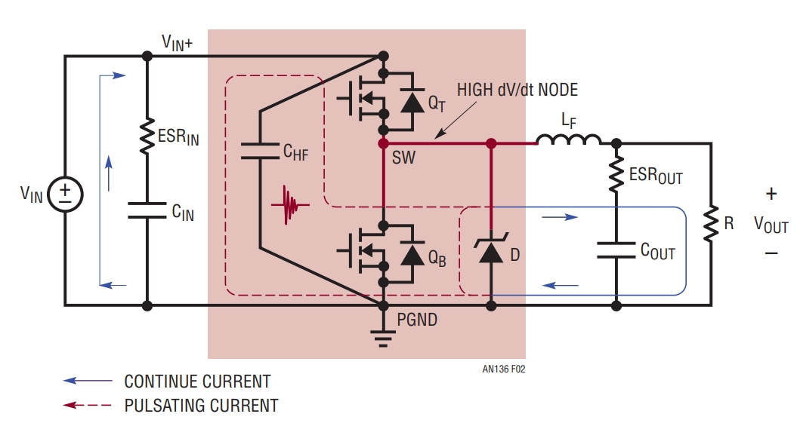
图源：ADI AN-136《PCB Layout Considerations for Non-Isolated Switching Power Supplies》Figure 2
- 连续路径（输入主干、电感支路、输出）：稳态电流基本恒定，v=L·di/dt≈0，开关沿的 di/dt 显著低于换流路径，因此布局重点更多是导通损耗、压降与温升预算——铺大铜、加过孔、走平面，怎么粗怎么来。但要注意：它的寄生电感并非"无所谓"，仍会影响纹波、瞬态响应和 EMI，只是优先级排在换流路径之后。
- 脉冲路径（上管漏极 → 开关节点 → 下管源极 → 高频电容）：方波电流全部的 di/dt 都发生在这里。它要求的不是"宽"，而是回路面积小——面积决定电感，电感决定尖峰与振铃。
最常见的思维错位：把"大电流"当成了布局的敌人，把所有粗铜走线摆在第一优先级；而对真正决定 EMC 与器件安全的高频脉冲回路反而随手一画。记住：损耗看连续路径（电阻），噪声看脉冲路径（电感）——两条路径的优化方向经常互相冲突（例如把高频电容摆在最里面会牺牲输入干路的宽度），必须先脉冲后连续。
02功率回路：布局的第一优先级
2.1 热回路 Hot Loop
Hot loop（热回路 / 换流回路）定义为：开关动作瞬间，di/dt 电流在器件与最近的高频储能电容之间围成的那一圈。它是整块板子上唯一"每个开关沿都在被充放电"的回路，因此也是电压尖峰、振铃、辐射 EMI 三件事的共同源头：
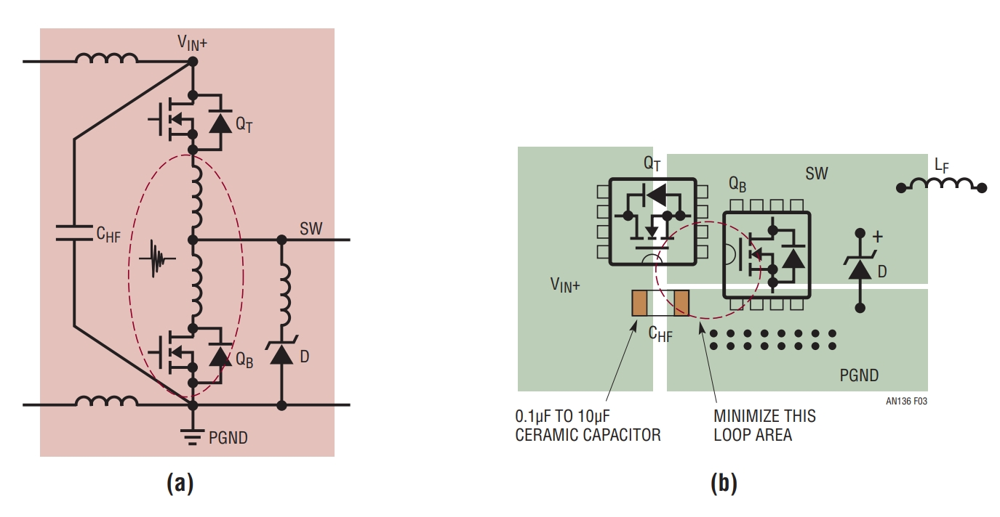
图源：ADI AN-136 Figure 3
读这张图的正确姿势：回路电感 = 这一圈上所有节段的电感之和——包括两颗管子的封装引线、走线、过孔、以及"看起来很大"的电解/大容电容的 ESL。这里要分清两种电容的分工：大容量电解（bulk）管能量——它承担低频储能、母线纹波和负载动态，绝非"没有贡献"；陶瓷电容（CHF）管边沿——它 ESL 极低又能贴得近，才能就近吃掉开关沿对应的超高频脉冲电流。bulk 电容的短板不是"存不了能量"，而是"到 MHz 以上阻抗被自身 ESL 抬高、又物理上贴不进圈里"，所以对 hot loop 帮不上忙。真正把 di/dt 就近接住的，是那颗 0.1~10 μF 陶瓷电容。这就是 2.3 节三个手段的第一条。
2.2 Boost 同理：热回路换到了输出侧
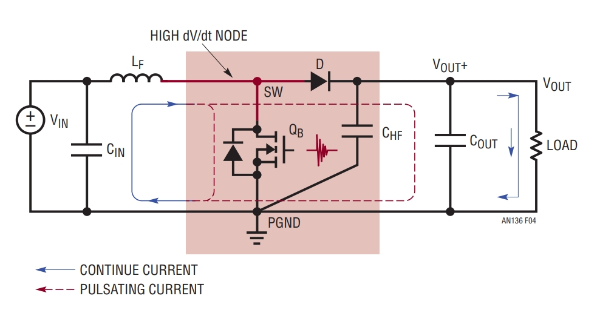
图源：ADI AN-136 Figure 4
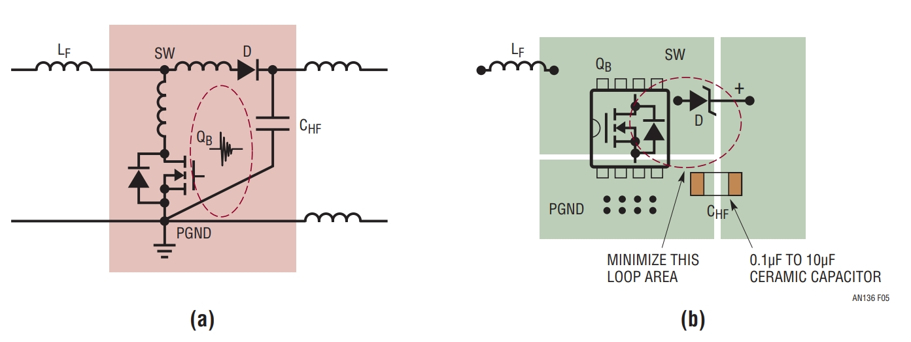
图源：ADI AN-136 Figure 5
别把 Boost 的热回路画错方向：Boost 的输入串着电感，电流连续、di/dt 平缓；真正"每个开关沿被硬切换"的是二极管与开关管之间的输出侧换流环（叠加二极管反向恢复电流，是整板最脏的 di/dt）。所以高频陶瓷电容要贴在输出侧的 QB 与 D 之间，而不是像 Buck 那样贴在输入侧。方向判断反了，布局就会把最该缩小的环路留在原地。
拓扑换了，方法论不变：先画出"开关沿时刻电流在哪一圈上被切换"（这一圈就是 hot loop），再把最近的高频电容按进圈里。Buck 的圈在输入侧（CHF↔上管↔下管），Boost 的圈在输出侧（QB↔D↔输出 CHF）；半桥 / 全桥的热回路是"上管 + 下管 + 母线支撑电容"，LLC 是谐振腔侧，方法完全一样。先找圈，再布线——顺序反了的人是在"铺铜"而不是"布局"。
2.3 压缩环路面积的三个手段
| 手段 | 做法 | 效果与代价 |
|---|---|---|
| ① 高频去耦电容就位 | 0.1~10 μF 陶瓷电容直接跨接在热回路两端（Buck：上管漏极与下管源极；Boost：输出侧的开关管与二极管之间） | 把 di/dt 电流的"就近回流"建立起来；代价是占用器件脚旁的面积——这个位置是功率板最贵的地皮 |
| ② 层间耦合 | 让热回路的去程与回程在相邻两层紧密正对（去程顶层、回程紧贴其下的地层/中间层），使回流路径尽量贴近去程 | 去回电流方向相反、间距极小 → 磁场相互抵消，自感+互感合成后的回路电感大幅低于同层走线；代价是占用层叠资源（第 03 章） |
| ③ 器件排布归位 | 半桥上下管面对面/紧贴布置，驱动器塞进器件之间的空档，开关节点铜皮最小化 | 回路长度直接由"器件脚间距"决定，而不是"你的走线功力"；代价是散热与爬电距离要另外权衡 |
三手段的优先级：① 是必须项（没有高频电容，②③做得再好，di/dt 电流也会从远处的电解电容绕一个大圈）；② ③ 是把电感从"几十 nH"压到"几 nH"的关键。热回路电感每降 10 nH，同等 di/dt 下尖峰少 20~40 V——这是布局能直接换来的器件安全裕量。
2.4 只有"小回路"才需要热
"热回路"这个词容易被误解成"发热的回路"。它是"热"（高频、快速切换）而不是"烫"：真正的发热大户是连续路径上的 I²R 与开关器件本身。混淆的结果常常是"为了散热把热回路的器件拉开距离"，恰好把最怕大的面积做大了。正确的并行处理：发热问题用铜箔面积、过孔阵列、散热过孔到背面铺铜解决；热回路问题用面积最小化解决——两者用的是板上不同的区域和不同的层，通常并不冲突。
03层叠与地平面
3.1 层叠：给电流一条回家的路
层叠是布局的"骨架"：它决定了每一条电流的回程在哪里、离去程多远。功率板层叠的核心原则只有一条——每个大电流层，紧贴一个完整的地平面或电源平面：
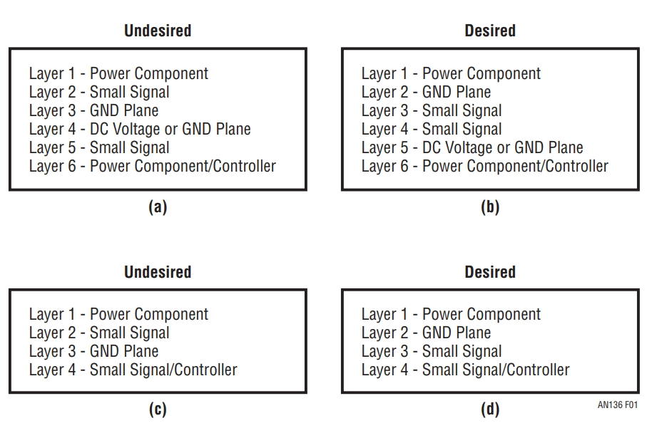
图源：ADI AN-136 Figure 1
逐条翻译成设计动作：
- 功率层与 PGND 相邻：热回路的去程（顶层器件铜）与回程（第二层完整 PGND）正对，回程电流自动镜像在去程正下方——这是"层间耦合"手段的层叠基础。
- 信号层不出头：控制 / 采样信号夹在两个完整平面之间，回流有最近的镜像路径，抗扰与辐射同时受益。
- 避免跨分割：信号（尤其是开关节点检测、电流采样）一旦跨过地平面分割缝，回流被迫绕行，环路面积和串扰一起变大。
3.2 PGND / SGND 与去耦
"地"不是一个东西，是多种回流路径的集合。功率地（PGND）承载安培级的脉冲电流，信号地（SGND）承载毫安级的采样与控制电流。当控制器提供独立的 SGND/PGND（或 AGND）引脚时，应优先遵循 datasheet 与 reference layout 的接地方案——典型做法是让控制信号回流与脉冲功率回流分开，并在芯片指定的安静节点附近单点汇接（常选在功率地引脚或采样网络参考点）。不要为了"分地"而任意切割完整的参考平面：对没有独立 PGND/SGND 引脚、或 datasheet 明确要求共平面的器件，盲目割地反而破坏回流、恶化 EMI：
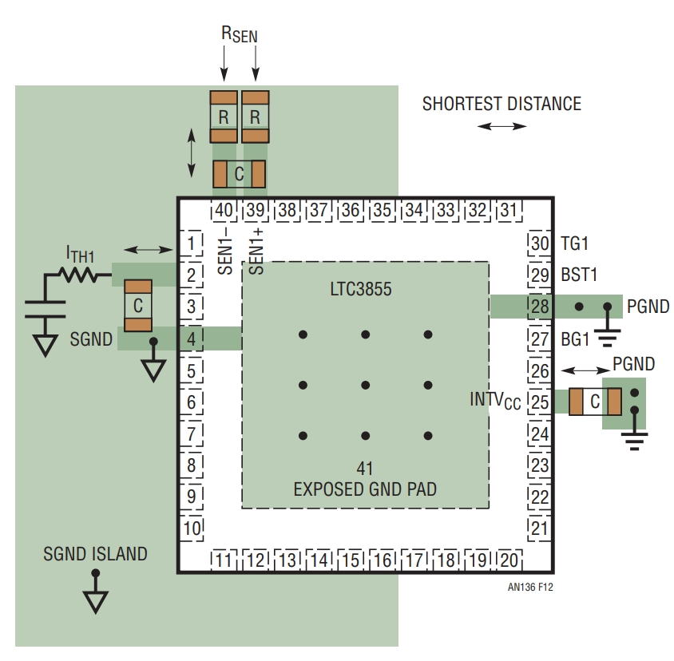
图源：ADI AN-136 Figure 12
- 为什么单点：脉冲电流在 PGND 上产生的瞬态压降（L·di/dt）是安培级回路在纳亨地网上毫伏到伏级的跳动。多点相连 = 把这个跳动原样送给 IC 的地参考；单点汇接 = 让跳动只存在于功率侧，SGND 始终是"静土"。
- 去耦电容跟地走：IC 的 VCC 去耦电容回流必须直接进 SGND（图中的做法），而不是随手就近打过孔进 PGND——那等于给控制地又开了一条污染通道。
- 分压/采样的参考点：输出电压采样电阻的"地端"应接在输出电容的功率地极板上（Kelvin 采样，见 4.4），而不是任意信号地——否则负载电流在铜皮上的压降会直接变成输出电压的误差。
3.3 过孔、敷铜与载流
| 项目 | 工程规则 |
|---|---|
| 过孔 = 电阻 + 电感 | 单个过孔 ≈ 0.5~2 nH / mΩ 量级。功率电流换层必须过孔阵列（8~16 个成排），并且阵列要放在电流真正流过的地方，不是装饰性撒点。 |
| 载流能力 | 按 IPC-2152 或经验曲线（1 oz 铜、10°C 温升约 1 A/mm 宽量级）核算走线/平面宽度；连续路径按最大直流核算，热回路按 RMS 核算。 |
| 敷铜的目的性 | 铺铜要问"这段铜属于哪条回路"：属于连续路径 → 越宽越好；属于热回路 → 面积越小越好。没有目的性的满板敷铜会无意中扩大高频回流面积。 |
| 背面散热 | 器件散热焊盘打过孔阵列到背面大铜——同时服务热（第 03 章之外的另一半）与寄生（把源极回流引到第二层平面）。 |
3.4 热风焊盘的隐性代价
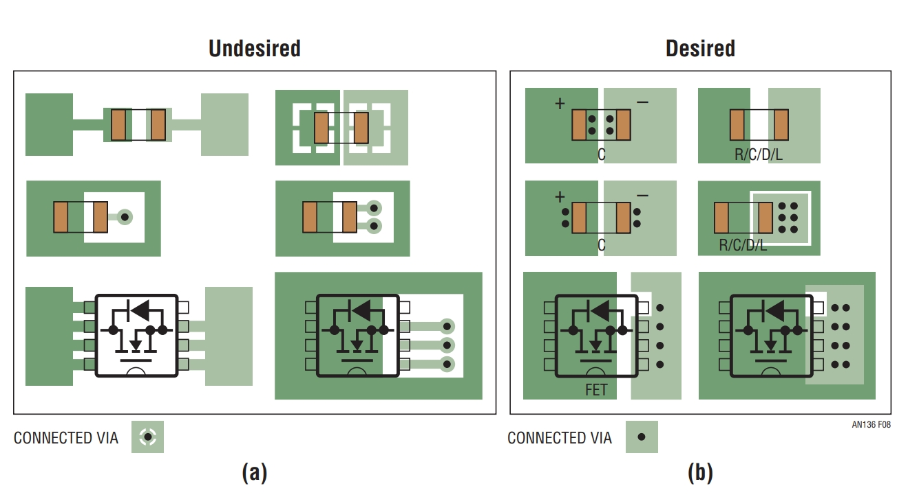
图源：ADI AN-136 Figure 8
热风焊盘是功率板最隐蔽的坑之一：它在 Gerber 里只是一个小小的十字花，视觉上完全无害，实际却让功率回流经过几根细辐条——每根辐条 mΩ 级电阻和纳亨级电感，串联在安培级回路上。规则：高频功率与地焊盘通常实心连接（除非制造或器件另有要求，如大铜面回流焊需适度热阻平衡），热风焊盘优先只留给纯信号网络（且要评估载流）。
04驱动回路与 Kelvin
4.1 共源电感：驱动回路的头号敌人
三脚封装的 MOSFET 里，源极引脚同时承担两个角色：功率电流的回流通道、以及驱动信号的参考地。封装与走线的源极电感（共源电感，Common Source Inductance，LS）因此同时坐在两条回路里——这就是问题的根源：
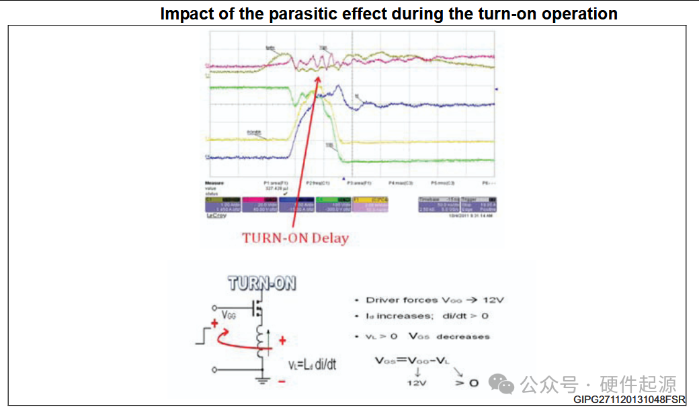
图源：镭尔特《MOSFET 多出来的一只 Source 脚——通俗理解 Kelvin Source Concept》
这个机理本质是负反馈：di/dt 越大，LS 上的反电动势越大，VGS 被削得越狠，于是 di/dt 被自动压回去。听起来"自稳定"，实际后果全是负面的：
- 开关变慢：电流上升/下降沿被拉长，开关损耗上升；
- 驱动失控：你设计的 Rg 与驱动强度，实际效果被 LS 重新分配——同一张原理图，换个封装/布局，开关速度完全不同；
- 关断 dv/dt 误开通：互补管关断时，源极电感耦合的瞬态电压叠加到被驱动管的 VGS 上，可能越过阈值造成半桥直通。
4.2 Kelvin 源极：把参考地还给驱动
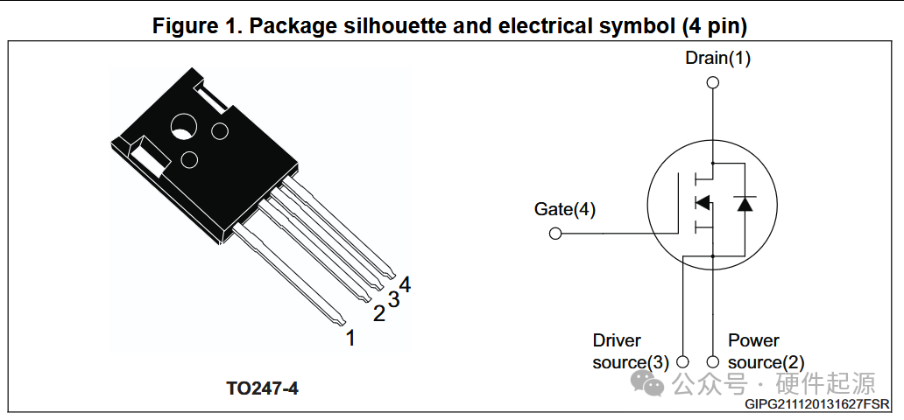
图源：镭尔特 Kelvin Source Concept 文章 Figure 1
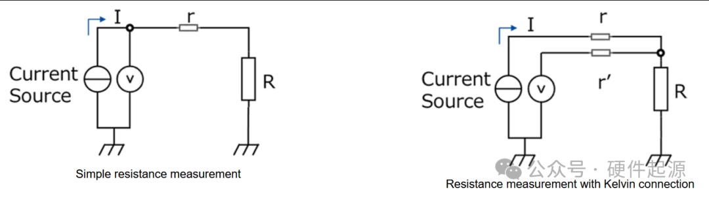
图源：镭尔特 Kelvin Source Concept 文章 Figure 4
布线要点（封装给了引脚，板子要接对）：
- 驱动源极（脚 3）单独走线回到驱动器的 GND，中途不碰功率 PGND；
- 功率源极（脚 2）与散热焊盘、PGND 平面正常连接，承载全部回流；
- 两条"源"最后在器件附近单点汇接（回路连续性），但驱动信号的整个往返路径（driver OUT → 栅极 → Rg → 驱动源极 → driver GND）必须是独立小环。
选了四脚封装、布线却把脚 3 直接接进功率地平面——这是 Kelvin 方案最常见的"白买"：驱动电流照样从功率地回流，共源电感分文未减。Kelvin 是"封装 + 布局"的组合拳，缺一半等于零。
4.3 收益量化与器件选型
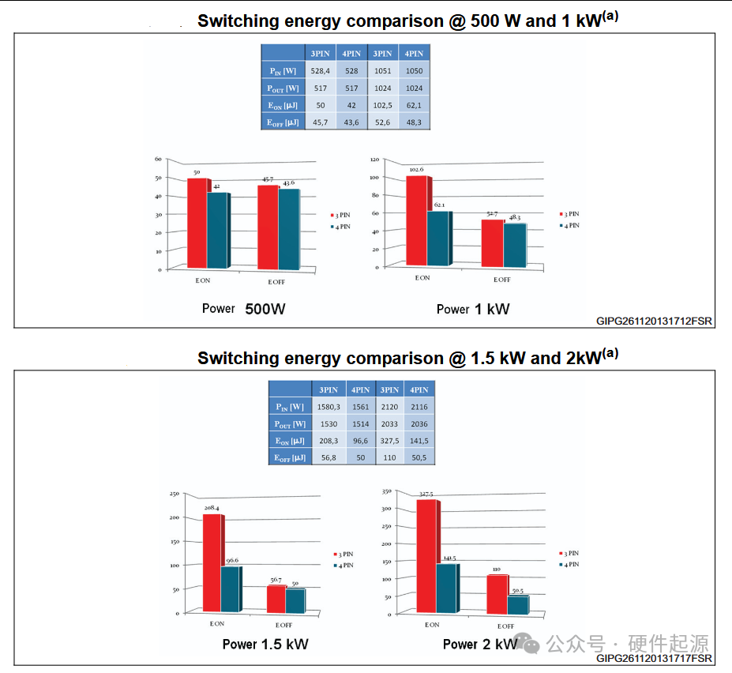
图源：镭尔特 Kelvin Source Concept 文章 Figure 5
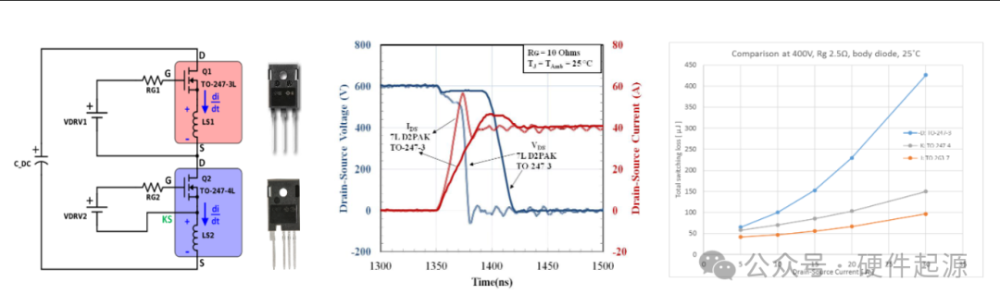
图源：镭尔特 Kelvin Source Concept 文章 Figure 7
定性结论比具体数字更可靠：在某一具体测试条件下（引自上述文章汇总的原厂数据：约 2 kW 级 PFC 整机），3 脚换 4 脚可带来约 0.3% 的效率提升、约 20°C 的器件壳温下降，收益全部来自开关沿变快、开关损耗下降。这类数字高度依赖器件、负载、母线电压、驱动阻抗与开关速度，只能当量级参考，不能当普适指标——想引用请回到 Wolfspeed / Infineon / onsemi 的原始测试曲线并附测试条件。趋势是确定的：SiC 的开关沿本来就要比硅快一个数量级，同等的 LS 在 SiC 上造成的 VGS 削减和损耗多得多，这也是当前 SiC 分立器件普遍转向四脚/开尔文封装（TO-247-4、TO-263-7 等）的原因。
4.4 Kelvin 电流采样：同一思想的控制侧
Kelvin 思想在控制侧同样无处不在——输出电流采样就是典型：
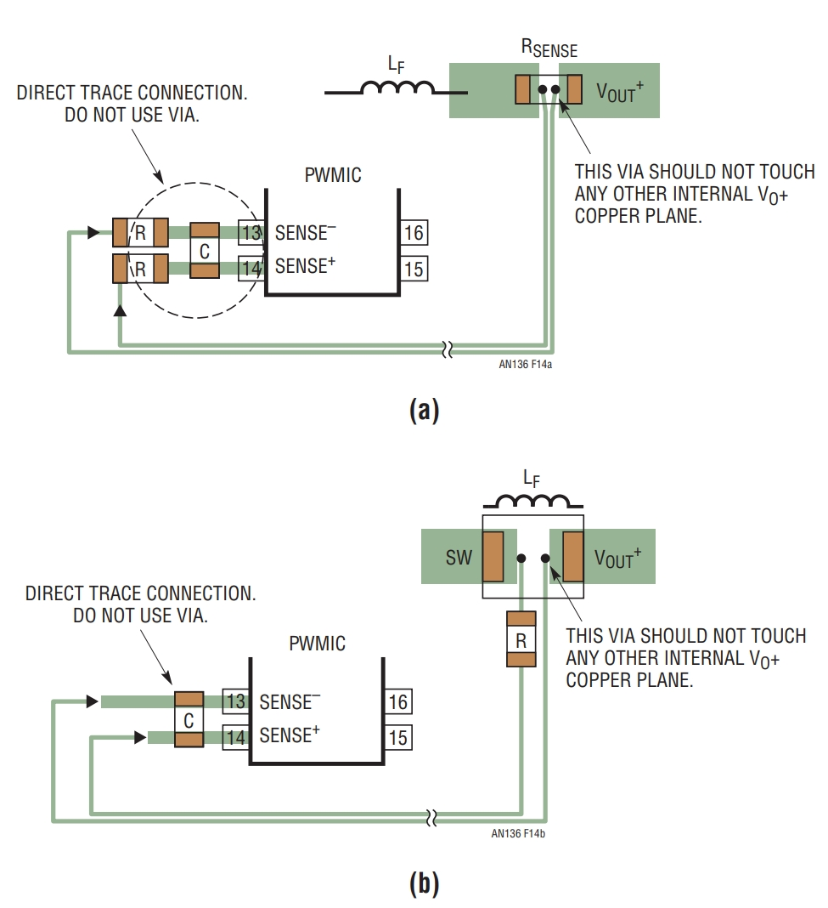
图源：ADI AN-136 Figure 14
一招两式的统一：Kelvin 驱动源极 = 让驱动参考不流功率电流；Kelvin 电流采样 = 让检测表笔不流功率电流。凡是"参考点/检测点"和"功率路径"共用的地方，都问一句：能不能像四线法一样分开？这一问在布局评审里能抓掉一大类隐蔽误差（采样电阻、分流器、遥测、基准地）。
05栅极走线与驱动布置
5.1 栅极走线规则
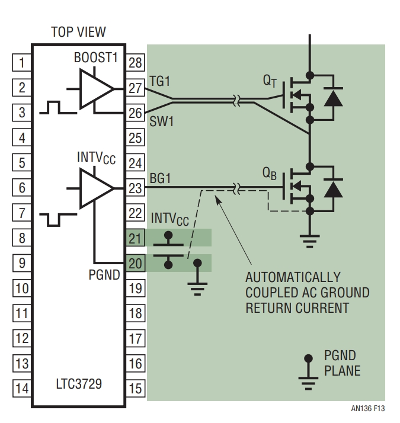
图源：ADI AN-136 Figure 13
| 规则 | 理由 |
|---|---|
| 栅极回路最小化（往返同层紧邻） | 栅极回路电感与 Ciss 构成谐振：电感大 → 栅极振铃、甚至超过 VGS,max 击穿。往返走线同层并排、紧贴，是降低回路电感的标准做法 |
| Rg 就近贴管脚 | 若目的是阻尼 Gate 引脚附近由走线寄生 L 与 Ciss/Cgd 构成的局部谐振，Rg 应贴近 MOSFET 栅极放置。放在驱动器输出端仍能限流、仍能调开关速度，并非"没放"——只是对局部栅极振铃的阻尼效果明显变差（振铃回路在 Rg 之外） |
| 上/下管驱动各自独立回流 | 上管回流到 VS/SW 节点、下管回流到 PGND（或各自 Kelvin 源极），不共用走线段——共段 = 互相注入 dv/dt/di/dt 干扰 |
| 开关节点铜皮最小化 | SW 节点对地电容决定 dv/dt 位移电流与共模 EMI；铜皮只在"连接器件"所需的最小范围 |
| 驱动走线不跨分割、不并行 SW 节点 | SW 是整板 dv/dt 最强的骚扰源；栅极走线与其长距离并行等于自装耦合电容 |
5.2 驱动器布置与回流归位
- 驱动器塞进器件空档：半桥两管之间的"死区"是驱动器的天然座位——距离最短、上下管驱动回路天然分离、也天然远离控制区。
- 自举电容紧贴：高侧自举方案的 Cboot 必须贴着驱动 IC 的 VB/VS 引脚，它承载的是高侧驱动的全部脉冲电流——它就是高侧驱动的"hot loop 电容"。
- 米勒钳位与负压：dv/dt 高的场合（SiC、GaN），关断沿的米勒电流可能把互补管抬过阈值。对策按优先级：减小开关节点铜皮（降低耦合）→ 关断用低阻路径或分离 Ron/Roff、强下拉 → 专用 Miller clamp → 负压关断。是否用负压、用多大负压强烈依赖具体器件：SiC 常见 −2 ~ −5 V，但不少 GaN 推荐 0 V 关断（负压还会增大第三象限死区导通损耗），务必以器件 datasheet 与 gate-driver 应用笔记为准。这些都要在布局阶段预留位置，而不是调试时飞线。
- 驱动电源去耦：每个驱动通道的 VCC 去耦电容（含负压轨）紧贴驱动 IC，回流直接进该通道的参考地——与 3.2 节 IC 去耦同理。
06完整案例：两相 Buck 的噪声排障
本章复述 AN-136 中的真实排障案例（双相、2.5 V / 30 A 输出的 Buck），把前五章的方法串成一次完整的"现象 → 定位 → 对策 → 验证"。
6.1 现象：随负载出现的振铃
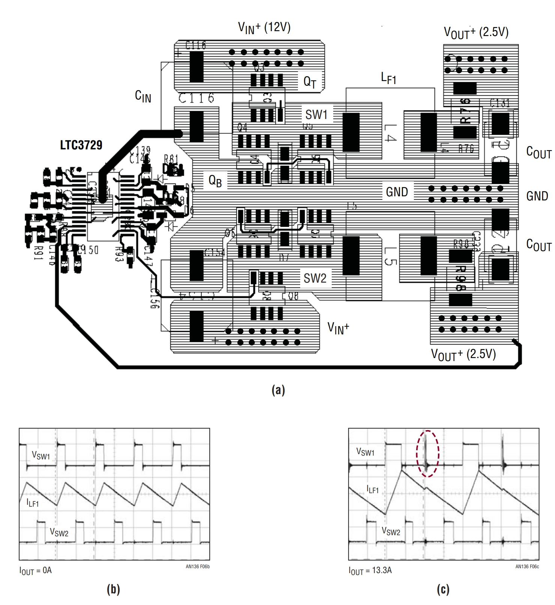
图源：ADI AN-136 Figure 6
读图要点："轻载干净、重载振荡"是热回路问题的签名。轻载下脉冲电流幅度小，L·di/dt 不足以激起可见振铃；重载 di/dt 变大，回路电感两端的激发电压超过阈值，寄生谐振被点亮。凡是"负载相关"的开关噪声，第一嫌疑通常是热回路，而不是控制环路（控制环不稳定通常是全负载或特定频段，且与开关沿无关）。
6.2 定位：输入电容的反谐振
定位逻辑链：
6.3 对策与验证
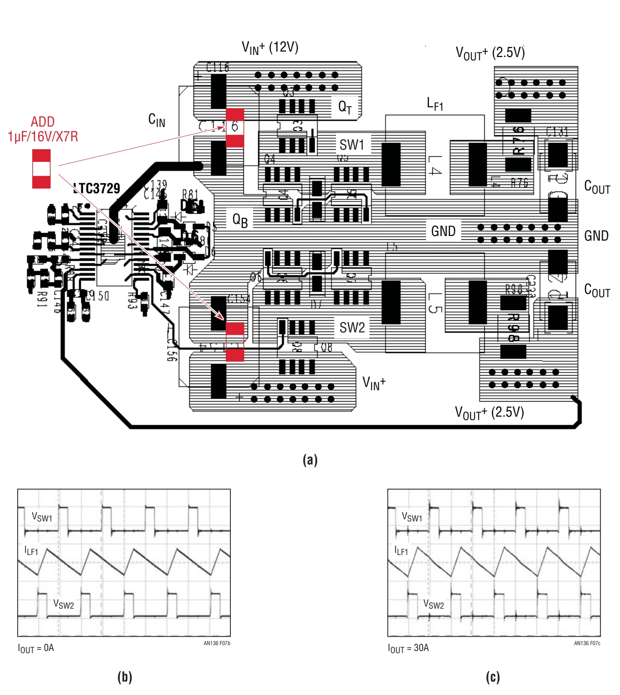
图源：ADI AN-136 Figure 7
本案例的三条通用教训：① 高频去耦电容的位置比容量重要——它必须"骑"在热回路两端；② "大容量 ≠ 低阻抗"，频率越高越看 ESL 和距离；③ 排障先看负载相关性（重载变差 → 热回路；轻载变差 → 多半是环路/最小负载问题），一步就能把方向切对。
07实测验证：双脉冲与近场探测
7.1 双脉冲测试：布局的体检仪
双脉冲测试（Double Pulse Test，DPT）用最简单的半桥 + 电感负载，把开关器件在"真实 di/dt、真实回路"下的开通过程（第二段脉冲的开通沿）和关断过程（长脉冲末端的关断沿）暴露给示波器——它是把"布局好坏"变成数字的标准仪器：
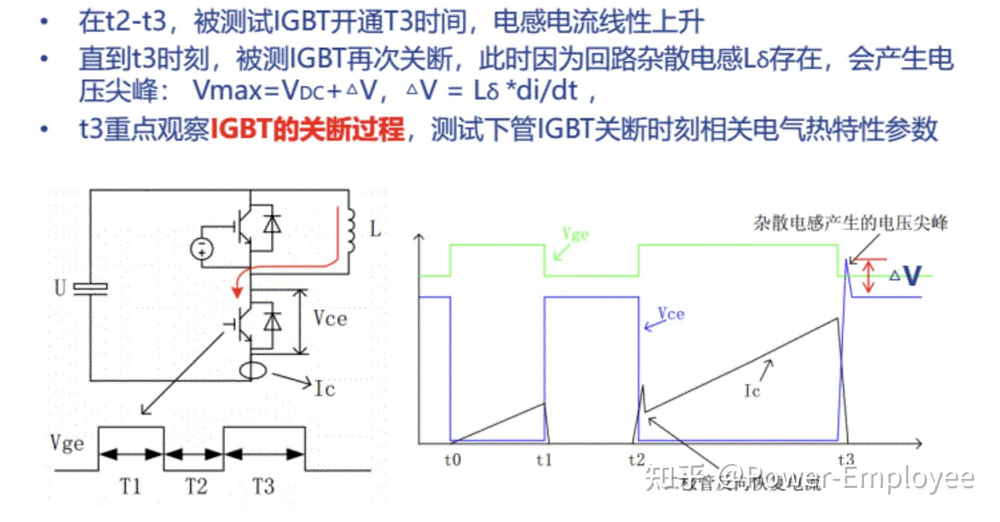
图源：知乎《SiC 碳化硅 MOSFET 功率器件双脉冲测试方法介绍》
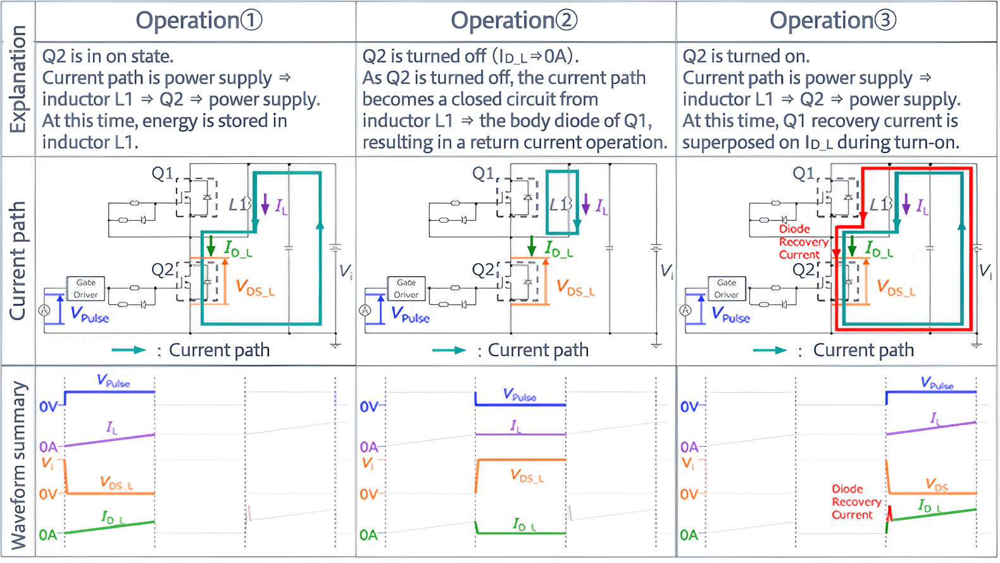
图源：知乎《SiC 碳化硅 MOSFET 功率器件双脉冲测试方法介绍》
| DPT 看什么 | 现象 | 对应的布局问题 |
|---|---|---|
| 关断电压尖峰 ΔV | VDS 超出母线的过冲 | 换流回路电感 Lσ（第 02 章） |
| 开通延迟与电流上升率 | di/dt 被压低、沿变钝 | 共源电感 / Kelvin 未落实（第 04 章） |
| 栅极波形 | VGS 振铃、平台期毛刺、负向尖峰 | 栅极回路电感、驱动回流共段（第 05 章） |
| 反向恢复 | rrm 峰值与恢复振荡 | 换流回路电感放大振铃、体二极管/SRD 特性 |
7.2 从波形反推回路电感
DPT 最大的价值是把寄生参数变成可测量、可追踪的数字，让布局迭代有了 scoreboard。下面两式都是一阶估算，用来判断量级、追踪趋势，而不是给出精密绝对值：
为什么只是"一阶"：关断沿法的 ΔV 还混入了换流、探头寄生、器件电容与反向恢复的影响；振铃频率法的等效电容 Ceq ≠ 单颗 MOSFET 的 Coss——它还包括对管结电容、二极管结电容、PCB 寄生与探头电容，且 Coss 本身随电压强烈非线性。直接套 datasheet 单点 Coss 只能得到数量级估计，要更准就按偏置取 Ceq 或用双脉冲去嵌测量。
数字自洽是排查习惯：算出的回路电感如果到了几百 nH，先怀疑 di/dt 或 ΔV 读数有误（探头带宽、接地环引入的假振铃），再怀疑布局——分立半桥布局 10~40 nH、优质叠层模块 5 nH 以下是正常区间。量级感就是最快的一层校验。
布局迭代的正确姿势：改一版 → DPT 记录 ΔV 与 Lloop → 换布局 → 同条件复测。两三个迭代周期，热回路电感通常能从几十 nH 压到 10 nH 级。
7.3 近场探测与 EMI 排查
- 磁场探头（H 场环）找电流环：贴近板面扫一圈，辐射最强处就是 di/dt 回路的位置——用它验证"热回路是否真的小了"，也能抓到无意形成的意外环路（比如去耦电容回流绕远路）。
- 电场探头（E 场短杆）找电压节点：对准 dv/dt 最强的开关节点、散热器耦合点。散热器与 MOSFET 漏极间的寄生电容是共模 EMI 的经典通路，必要时加屏蔽板/接地。
- 与传导测试联动：近场找到的"热点"与 CISPR 传导超标频段对时间/频率对账，通常一次就能锁定主辐射回路（对应《电路与系统分析》第 2.8 节的开关频谱包络）。
闭环的意义：DPT 给"器件与回路"打分，近场探测给"辐射源定位"打分。布局的好坏从此不是玄学评语，而是三个数字：Lloop（nH）、ΔV（V）、近场峰值（dBμV）。能被测量的，才能被改进——这和建模层的"预测—实测—解释偏差"是同一件事在物理层的翻版。
08十个常见误区
- 把"大电流"当第一优先级，忽略 di/dt。连续路径只看电阻与温升；脉冲路径才决定噪声与器件安全。先 hot loop，再大铜皮。
- 用大容量电容充当高频去耦。频率超过 MHz 级后阻抗由 ESL 和距离决定，电解/固态电容对热回路基本无效。0.1~10 μF 陶瓷必须贴进回路。
- 过孔只按电阻算，不算电感与阵列。单孔纳亨级电感串在热回路里就是尖峰；大电流换层必须过孔阵列，且阵列要落在电流路径上。
- 热回路器件被散热需求拉开。发热与"热回路"是两件事：散热用背面铜与过孔阵列，回路面积用器件排布解决，通常并不冲突。
- SGND/PGND 多点乱接。功率地的 L·di/dt 跳动通过多点连接污染控制参考地；单点汇接位置要经过选择（器件地或采样参考点）。
- 功率焊盘用热风焊盘。辐条把 mΩ 级电阻和纳亨级电感串进安培级回路；高频功率与地焊盘通常实心连接。
- 栅极走线只求短、不规划回流。驱动回路 = 去程 + 回程；回程与功率回流共段或绕远，等于把 dv/dt 干扰直接接进栅极，且共源电感原样保留。
- 买了四脚 Kelvin 封装，脚 3 却接进功率地。Kelvin 是封装 + 布局的组合；驱动源极必须独立回到驱动器，中途不碰 PGND。
- 开关节点铜皮越宽越"稳"。SW 节点对地电容加大 dv/dt 位移电流与共模 EMI；它的正确目标是"最小连接面积"。
- 布局完成后不做实测闭环。没有 DPT 的 Lloop 数字和近场定位，一切"应该没问题"都是假设。布局是迭代出来的，不是画出来的。
09公式速查卡
寄生参数量级
热回路与层叠
驱动回路与 Kelvin
实测验证
10自测：检查你是否真的掌握了
答案折叠在题目下方。先自己想，再展开对照。
1 · 为什么连续电流路径不需要"小"，只需要"宽"？
寄生电感只有在电流变化（di/dt）时才产生电压；连续路径电流近似恒定，电感两端压降 ≈ 0，它只贡献 I²R 损耗——所以要宽（低电阻）。脉冲路径每个开关沿都有巨大 di/dt，电感直接变成电压源与谐振腔——所以要面积小。
2 · 20 nH 的热回路在 3 A/ns 关断下产生多大尖峰？对 650 V SiC 意味着什么？
V = L·di/dt = 20 nH × 3 A/ns = 60 V。叠加在母线（如 400 V）上后 VDS 达 460 V，占耐压 71%——还没算振铃过冲与降额要求。这就是热回路电感直接吃掉器件安全裕量的算术。
3 · 板上挂着 470 μF 电解电容，为什么热回路照样振铃？
高频下电容的阻抗由 ESL 决定（jω·ESL），且电解电容物理上无法贴近热回路。di/dt 电流的频谱在 MHz 级以上，需要 0.1~10 μF 陶瓷电容"骑"在回路两端提供就近回流；大容量电容只在低频段有用。
4 · Kelvin 源极改善开关速度的机理是什么？
把驱动参考地与功率回流分离后，共源电感不再坐在驱动回路里：开通时源极电感上的 v = L·di/dt 反电动势不再削减有效 VGS，负反馈解除，di/dt 恢复到由驱动强度与栅极网络决定的设计值，开关沿变快、开关损耗下降。
5 · 四脚管买回来，怎样一个接法会让它退化成三脚管？
把驱动源极（脚 3）就近接入功率地平面、让驱动电流从 PGND 回流。此时驱动回路照样穿过功率路径，共源电感分文未减。Kelvin 源极必须独立走线回驱动器 GND，与功率地仅在器件附近单点相连。
6 · 层叠里"信号层夹在完整平面之间"解决的是什么问题？
回流路径问题。高速信号（含开关节点检测、采样线）的回流在最近的完整平面上镜像分布；夹在平面之间使回流环路面积最小、阻抗受控、对外辐射和受扰同时降低。信号一旦跨分割，回流绕行，面积与串扰一起恶化。
7 · 热风焊盘用在下管源极焊盘上，代价是什么？
辐条把焊盘与地平面隔开，功率回流被迫走几根细辐条——串联电阻（mΩ 级）与电感（nH 级）同时进入安培级脉冲回路：增加损耗、抬高源极电位跳动、并把共源电感加回来。功率焊盘应实心全连接。
8 · 双脉冲测试的三个阶段各在"体检"什么？
① 充电段建立目标电流（设定工况）；② 续流段检验体二极管/续流通路；③ 第二次开通沿看开通特性（di/dt、共源电感、反向恢复），长脉冲末端关断沿看换流回路电感（ΔV = L·di/dt）。两个关键观察对象正好对应布局的两大回路。
9 · 实测关断尖峰 ΔV = 12 V、di/dt = 0.4 A/ns，回路电感多少？合不合理？
L = 12 V ÷ (0.4 A/ns) = 30 nH。落在分立半桥布局 10~40 nH 的正常区间，合理。若算出几百 nH，先怀疑测量（探头带宽、接地环）或读数（di/dt 的取值段），再怀疑布局。
10 · 近场探测中，H 场环和 E 场短杆分别找什么？
H 场环找电流环：贴近板面扫描，辐射峰对应 di/dt 回路的位置与大小——验证热回路是否真的小、抓意外环路；E 场短杆找电压节点：开关节点、散热器耦合等 dv/dt 强点。两者与传导 EMI 频谱对账后即可锁定主辐射源。
11参考资料与图片来源
本文所有插图的原始出处与延伸阅读，按类别列出。图片版权归原作者所有。
原厂应用笔记（本文图片来源）
- ADI（凌力尔特）AN-136《PCB Layout Considerations for Non-Isolated Switching Power Supplies》 —— 本文 Figure 1–8、12–14 的出处：层叠、连续/脉冲路径、hot loop、输入电容排障案例、焊盘处理、栅极走线、Kelvin 电流采样。布局类应用笔记的标杆，强烈建议读原文。全文中文翻译见本站：AN-136 原文中文全译。
- TI / National AN-1149（SNVA021）《Layout Guidelines for Switching Power Supplies》 —— 同类主题的姊妹篇：热回路、地平面与元器件摆放的图解版。
- Wolfspeed《SiC MOSFET PCB 布局技术指南》 —— SiC 场景下的布局专项指南（换流回路量化、开尔文封装布线）。
- Infineon EiceDRIVER 系列应用笔记 —— 隔离驱动布局、栅极振铃与共源电感对策。
技术文章
- 《MOSFET 多出来的一只 Source 脚，到底有什么用？——通俗理解 Kelvin Source Concept》 —— 本文 Kelvin 章节全部插图的出处：三脚/四脚对比、共源电感机理、四线法类比、功率等级与器件类型的数据汇总。
- 知乎《SiC 碳化硅 MOSFET 功率器件双脉冲测试方法介绍》 —— 本文双脉冲章节插图的出处：测试时序、电流路径与波形读图。
- Rohde & Schwarz《Tips and tricks on double-pulse testing for power electronics》 —— 双脉冲测试的仪器方法学（探头、去嵌、时序技巧）网络研讨。
工具与标准
- IPC-2152 —— 走线载流能力设计曲线（连续路径的宽度核算依据）
- IPC-2141A —— 受控阻抗设计（信号层与平面间距的层叠依据）
- CISPR 25 / CISPR 32 —— 车载与多媒体设备传导/辐射 EMI 限值（近场排查的对账基准）
- 工具链：Altium / Cadence / KiCad 的规则驱动布局（回路 DRC）；近场探头套件；双脉冲测试台架（隔离驱动 + 无感负载电阻 + 高压差分探头 + 电流探头）